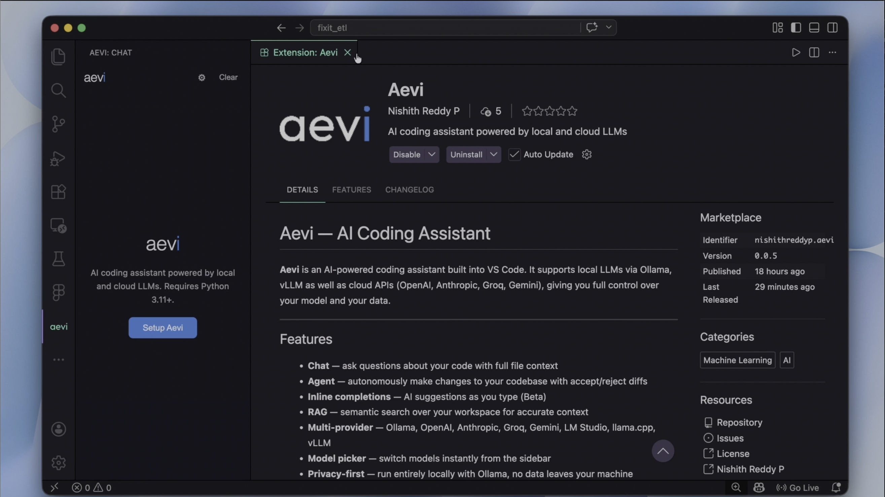
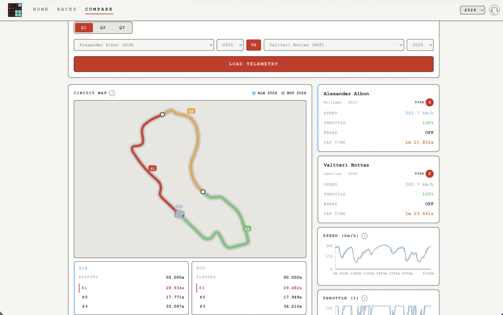

<!DOCTYPE html>
<html lang="en">
<head>
  <meta charset="UTF-8" />
  <meta name="viewport" content="width=device-width, initial-scale=1.0" />
  <meta name="description" content="Nishith Reddy's Portfolio" />
  <meta name="author" content="Nishith Reddy" />
  <meta property="og:title" content="Nishith Reddy's Portfolio" />
  <meta property="og:description" content="Building intelligent systems — from agentic AI pipelines to computer vision models." />
  <meta property="og:type" content="website" />
  <meta property="og:url" content="https://nishith-reddy.github.io/" />
  <link rel="icon" type="image/x-icon" href="favicon.svg" />
  <link rel="apple-touch-icon" sizes="180x180" href="apple-touch-icon.png" />
  <title>Nishith Reddy's Portfolio</title>

  <!-- Google Analytics -->
  <script async src="https://www.googletagmanager.com/gtag/js?id=G-L6Q0BLKFP2"></script>
  <script>
    window.dataLayer = window.dataLayer || [];
    function gtag(){ dataLayer.push(arguments); }
    gtag('js', new Date());
    gtag('config', 'G-L6Q0BLKFP2');
  </script>

  <link rel="stylesheet" href="assets/css/style.css" />
</head>
<body>

  <!-- LAYOUT -->
  <div class="layout">

    <!-- SIDEBAR -->
    <aside class="sidebar" aria-label="Profile sidebar">

      <div class="sidebar-inner">
        <div class="sidebar-top">
          <h1>Nishith Reddy's<br /><span>Portfolio</span></h1>
          <div class="hero-eyebrow">Open to opportunities</div>
          <p class="hero-role">Data Scientist/ML Engineer</p>
          <p class="hero-sub">I build intelligent systems - from agentic AI applications to scalable data pipelines.</p>
          <a class="btn btn-primary" href="mailto:pnishithreddy@gmail.com">Get in touch</a>
        </div>

        <!-- EXPERIENCE -->
        <div class="sidebar-section" id="experience">
          <p class="section-label">Experience</p>
          <article class="exp-item">
            <div class="exp-role">Data Scientist / ML Engineer Co-op</div>
            <div class="exp-company">Crewasis (Intelligence Marketing Startup)</div>
            <div class="exp-date">New York, Jan 2025 – Jun 2025</div>
            <ul class="exp-desc">
                <li>Architected a scalable video analysis pipeline, reducing end-to-end latency by 3-4× compared to the base architecture through batch-processing and intelligent sampling.</li>
                <li>Built and optimized a production LLM inference pipeline, utilizing LangSmith for monitoring and DeepEval for automated benchmarking (achieving a 0.93 answer relevancy score).</li>
            </ul>
        </article>
          <article class="exp-item">
            <div class="exp-role">Undergraduate Researcher</div>
            <div class="exp-company">Humanitarian Technology Labs</div>
            <div class="exp-date">Jul 2021 – Apr 2023</div>
            <ul class="exp-desc">
                <li>Developed a custom U-Net deep learning architecture for real-time dirt detection in robotic systems, achieving a 21% accuracy improvement over baseline models.</li>
                <li>Built a cross-platform assistive mobile app using Flutter, integrating on-device object detection, OCR, and text-to-speech optimized for low-resource environments.</li>
            </ul>
        </article>
        </div>

        <!-- SKILLS -->
        <div class="sidebar-section" id="skills">
          <p class="section-label">Skills</p>
          <div class="skills-grid">
            <span class="skill">Python</span><span class="skill">PyTorch</span>
            <span class="skill">TensorFlow</span><span class="skill">LangChain</span>
            <span class="skill">LangGraph</span><span class="skill">FastAPI</span>
            <span class="skill">GCP</span><span class="skill">AWS</span>
            <span class="skill">PostgreSQL</span><span class="skill">MongoDB</span>
            <span class="skill">Airflow</span><span class="skill">Docker</span>
            <span class="skill">Model Evaluation</span><span class="skill">Inference</span>
            <span class="skill">RAG Systems</span><span class="skill">Fine-Tunings</span>
            <span class="skill">GitHub</span><span class="skill">CI/CD</span>

        </div>

        <!-- FOOTER LINKS -->
        <div class="sidebar-footer">
          <a href="https://www.linkedin.com/in/nishith-reddy-p/" target="_blank" rel="noopener noreferrer" data-ga-label="linkedin">LinkedIn</a>
          <a href="https://github.com/Nishith-Reddy" target="_blank" rel="noopener noreferrer" data-ga-label="github">GitHub</a>
        </div>
      </div>
    </aside>

    <!-- MAIN CONTENT -->
    <main class="main-content" id="projects">
      <div class="main-inner">

        <div class="main-header">
          <p class="section-label">Projects</p>
          <h2>Things I've built</h2>
        </div>

        <!-- FEATURED -->
        <div class="featured-grid">

          <article class="featured-card">
            <div class="featured-img-placeholder aevi-bg">
                
              <span class="featured-badge">Featured</span>
            </div>
            <div class="featured-body">
              <div class="featured-title">Aevi - AI Coding Assistant (Local & Cloud LLMs) </div>
              <div class="featured-desc">Designed, built, and shipped an AI coding assistant as a solo VS Code extension - available on both the VS Code Marketplace and Open VSX Registry. Built end-to-end from architecture to publication, Aevi brings context-aware code suggestions directly into the editor.</div>
              <div class="tags"><span class="tag">FastAPI</span><span class="tag">LiteLLM</span><span class="tag">Local Inference</span><span class="tag">Groq, OpenAI, Claude, Gemini</span><span class="tag">VS Code API</span></div>
              <div class="featured-links">
                <a class="feat-link" href="https://marketplace.visualstudio.com/search?term=aevi&target=VSCode" target="_blank" rel="noopener noreferrer" data-ga-label="aevi-vscode">
                  <svg viewBox="0 0 16 16" fill="none" stroke="currentColor" stroke-width="1.5" aria-hidden="true"><path d="M2 4l6-2 6 2v8l-6 2-6-2V4z"/></svg>
                  VS Code Marketplace
                </a>
                <a class="feat-link" href="https://open-vsx.org/search?query=aevi" target="_blank" rel="noopener noreferrer" data-ga-label="aevi-ovsx">
                  <svg viewBox="0 0 16 16" fill="none" stroke="currentColor" stroke-width="1.5" aria-hidden="true"><circle cx="8" cy="8" r="6"/><path d="M8 5v3l2 2"/></svg>
                  Open VSX
                </a>
                <a class="feat-link" href="https://github.com/Nishith-Reddy/aevi" target="_blank" rel="noopener noreferrer" data-ga-label="superbowl-github">
                    <svg viewBox="0 0 16 16" fill="currentColor" aria-hidden="true" style="width: 16px; height: 16px; margin-right: 6px;">
                        <path d="M8 0C3.58 0 0 3.58 0 8c0 3.54 2.29 6.53 5.47 7.59.4.07.55-.17.55-.38 0-.19-.01-.82-.01-1.49-2.01.37-2.53-.49-2.69-.94-.09-.23-.48-.94-.82-1.13-.28-.15-.68-.52-.01-.53.63-.01 1.08.58 1.23.82.72 1.21 1.87.87 2.33.66.07-.52.28-.87.51-1.07-1.78-.2-3.64-.89-3.64-3.95 0-.87.31-1.59.82-2.15-.08-.2-.36-1.02.08-2.12 0 0 .67-.21 2.2.82.64-.18 1.32-.27 2-.27.68 0 1.36.09 2 .27 1.53-1.04 2.2-.82 2.2-.82.44 1.1.16 1.92.08 2.12.51.56.82 1.27.82 2.15 0 3.07-1.87 3.75-3.65 3.95.29.25.54.73.54 1.48 0 1.07-.01 1.93-.01 2.2 0 .21.15.46.55.38A8.013 8.013 0 0016 8c0-4.42-3.58-8-8-8z"></path>
                    </svg> 
                    GitHub
                </a>
              </div>
            </div>
          </article>

          <article class="featured-card">
            <div class="featured-img-placeholder pitwall-bg">
               
              <span class="featured-badge" style="background:#e8230a">Featured</span>
            </div>
            <div class="featured-body">
              <div class="featured-title">Pitwall - F1 Analytics Platform</div>
              <div class="featured-desc">Designed and built an end-to-end F1 data platform from scratch - automated weekly data pipelines on GCP using GitHub Actions, with cloud storage and transformation layers on GCS and BigQuery, and a real-time analytics dashboard visualising lap times, race pace, pit strategy, and weather conditions across every session of the season.</div>
              <div class="tags"><span class="tag">GCS</span><span class="tag">BigQuery</span><span class="tag">GCP</span><span class="tag">FastAPI</span><span class="tag">Git Actions</span></div>
              <div class="featured-links">
                <a class="feat-link" href="https://pitwallf1.app" target="_blank" rel="noopener noreferrer" data-ga-label="pitwall-live">
                  <svg viewBox="0 0 16 16" fill="none" stroke="currentColor" stroke-width="1.5" aria-hidden="true"><circle cx="8" cy="8" r="6"/><path d="M8 2a9 9 0 010 12M2 8h12"/><path d="M3.5 5h9M3.5 11h9"/></svg>
                  pitwallf1.app
                </a>
                <a class="feat-link" href="https://github.com/Nishith-Reddy/pitwall-data" target="_blank" rel="noopener noreferrer" data-ga-label="superbowl-github">
                    <svg viewBox="0 0 16 16" fill="currentColor" aria-hidden="true" style="width: 16px; height: 16px; margin-right: 6px;">
                        <path d="M8 0C3.58 0 0 3.58 0 8c0 3.54 2.29 6.53 5.47 7.59.4.07.55-.17.55-.38 0-.19-.01-.82-.01-1.49-2.01.37-2.53-.49-2.69-.94-.09-.23-.48-.94-.82-1.13-.28-.15-.68-.52-.01-.53.63-.01 1.08.58 1.23.82.72 1.21 1.87.87 2.33.66.07-.52.28-.87.51-1.07-1.78-.2-3.64-.89-3.64-3.95 0-.87.31-1.59.82-2.15-.08-.2-.36-1.02.08-2.12 0 0 .67-.21 2.2.82.64-.18 1.32-.27 2-.27.68 0 1.36.09 2 .27 1.53-1.04 2.2-.82 2.2-.82.44 1.1.16 1.92.08 2.12.51.56.82 1.27.82 2.15 0 3.07-1.87 3.75-3.65 3.95.29.25.54.73.54 1.48 0 1.07-.01 1.93-.01 2.2 0 .21.15.46.55.38A8.013 8.013 0 0016 8c0-4.42-3.58-8-8-8z"></path>
                    </svg> 
                    GitHub
                </a>
              </div>
            </div>
          </article>
        </div>

        <!-- OTHER PROJECTS -->
        <div class="projects-grid">
  
  <article class="project-card">
    <span class="featured-badge" style="top: 12px; right: 14px;">&#9733; Top Project · MLOps Expo 2024</span>
    <div class="project-img-strip">
      <div class="proj-placeholder verta-bg">Verta · Agentic Chatbot</div>
    </div>
    <div class="project-title">Verta</div>
    <div class="project-desc">Engineered a serverless multi-agent shopping chatbot on GCP Cloud Run. Implemented hybrid retrieval, automated Airflow ETL pipelines, and layered Redis caching-accelerating response times by 3× with production-grade reliability.</div>
    <div class="tags">
      <span class="tag">LangChain</span>
      <span class="tag">LangGraph</span>
      <span class="tag">GCP</span>
      <span class="tag">FAISS</span>
      <span class="tag">FastAPI</span>
    </div>
        <div class="featured-links">
        <a class="feat-link" href="https://github.com/eCom-dev5/verta-chatbot" target="_blank" rel="noopener noreferrer" data-ga-label="superbowl-github">
            <svg viewBox="0 0 16 16" fill="currentColor" aria-hidden="true" style="width: 16px; height: 16px; margin-right: 6px;">
                <path d="M8 0C3.58 0 0 3.58 0 8c0 3.54 2.29 6.53 5.47 7.59.4.07.55-.17.55-.38 0-.19-.01-.82-.01-1.49-2.01.37-2.53-.49-2.69-.94-.09-.23-.48-.94-.82-1.13-.28-.15-.68-.52-.01-.53.63-.01 1.08.58 1.23.82.72 1.21 1.87.87 2.33.66.07-.52.28-.87.51-1.07-1.78-.2-3.64-.89-3.64-3.95 0-.87.31-1.59.82-2.15-.08-.2-.36-1.02.08-2.12 0 0 .67-.21 2.2.82.64-.18 1.32-.27 2-.27.68 0 1.36.09 2 .27 1.53-1.04 2.2-.82 2.2-.82.44 1.1.16 1.92.08 2.12.51.56.82 1.27.82 2.15 0 3.07-1.87 3.75-3.65 3.95.29.25.54.73.54 1.48 0 1.07-.01 1.93-.01 2.2 0 .21.15.46.55.38A8.013 8.013 0 0016 8c0-4.42-3.58-8-8-8z"></path>
            </svg>
            GitHub
        </a>
        <a class="feat-link" href="https://www.mlwithramin.com/project/f24-group-1" target="_blank" rel="noopener noreferrer" data-ga-label="verta-course">
            <svg viewBox="0 0 16 16" fill="currentColor" aria-hidden="true" style="width: 14px; height: 14px; margin-right: 6px;">
                <path d="M10.604 1h4.146a.25.25 0 0 1 .25.25v4.146a.25.25 0 0 1-.427.177L13.03 4.03 9.28 7.78a.751.751 0 0 1-1.042-.018.751.751 0 0 1-.018-1.042l3.75-3.75-1.543-1.543A.25.25 0 0 1 10.604 1zM3.75 2h3.5a.75.75 0 0 1 0 1.5H3.75a.25.25 0 0 0-.25.25v8.5c0 .138.112.25.25.25h8.5a.25.25 0 0 0 .25-.25v-3.5a.75.75 0 0 1 1.5 0v3.5A1.75 1.75 0 0 1 12.25 14h-8.5A1.75 1.75 0 0 1 2 12.25v-8.5A1.75 1.75 0 0 1 3.75 2Z"/>
            </svg>
            Course Feature
        </a>
    </div>
  </article>


  <article class="project-card">
    <div class="project-img-strip">
      <div class="proj-placeholder repairiq-bg">RepairIQ · GenAI RAG</div>
    </div>
    <div class="project-title">RepairIQ</div>
    <div class="project-desc">Architected a production-grade GenAI RAG system and automated ETL pipeline using Airflow and AWS S3. Engineered an MLOps framework with MLflow and optimized hybrid search strategies, driving a 17% increase in contextual recall with sub-second latency.</div>
    <div class="tags">
      <span class="tag">RAG</span>
      <span class="tag">AWS</span>
      <span class="tag">S3</span>
      <span class="tag">Airflow</span>
      <span class="tag">RAGAS</span>
      <span class="tag">DeepEval</span>
      <span class="tag">GenAI</span>
      <span class="tag">ETL</span>
    </div>
        <div class="featured-links">
        <a class="feat-link" href="https://github.com/Nishith-Reddy/LinguoSense" target="_blank" rel="noopener noreferrer" data-ga-label="superbowl-github">
            <svg viewBox="0 0 16 16" fill="currentColor" aria-hidden="true" style="width: 16px; height: 16px; margin-right: 6px;">
                <path d="M8 0C3.58 0 0 3.58 0 8c0 3.54 2.29 6.53 5.47 7.59.4.07.55-.17.55-.38 0-.19-.01-.82-.01-1.49-2.01.37-2.53-.49-2.69-.94-.09-.23-.48-.94-.82-1.13-.28-.15-.68-.52-.01-.53.63-.01 1.08.58 1.23.82.72 1.21 1.87.87 2.33.66.07-.52.28-.87.51-1.07-1.78-.2-3.64-.89-3.64-3.95 0-.87.31-1.59.82-2.15-.08-.2-.36-1.02.08-2.12 0 0 .67-.21 2.2.82.64-.18 1.32-.27 2-.27.68 0 1.36.09 2 .27 1.53-1.04 2.2-.82 2.2-.82.44 1.1.16 1.92.08 2.12.51.56.82 1.27.82 2.15 0 3.07-1.87 3.75-3.65 3.95.29.25.54.73.54 1.48 0 1.07-.01 1.93-.01 2.2 0 .21.15.46.55.38A8.013 8.013 0 0016 8c0-4.42-3.58-8-8-8z"></path>
            </svg> 
            GitHub
        </a>
    </div>
  </article>

  <article class="project-card">
    <div class="project-img-strip">
      <div class="proj-placeholder linguo-bg">LinguoSense · NLP Classifier</div>
    </div>
    <div class="project-title">LinguoSense</div>
    <div class="project-desc">Developed a real-time NLP tone analyzer integrating multiple ML models via a Streamlit frontend. Built a weak supervision pipeline to programmatically generate training data, reducing manual preparation time by 85% and boosting classification accuracy.</div>
    <div class="tags">
      <span class="tag">NLP</span>
      <span class="tag">Streamlit</span>
      <span class="tag">Weak Supervision</span>
      <span class="tag">Llama 3.1</span>
      <span class="tag">Gemini 1.5</span>
    </div>
    <div class="featured-links">
        <a class="feat-link" href="https://github.com/Nishith-Reddy/LinguoSense" target="_blank" rel="noopener noreferrer" data-ga-label="superbowl-github">
            <svg viewBox="0 0 16 16" fill="currentColor" aria-hidden="true" style="width: 16px; height: 16px; margin-right: 6px;">
                <path d="M8 0C3.58 0 0 3.58 0 8c0 3.54 2.29 6.53 5.47 7.59.4.07.55-.17.55-.38 0-.19-.01-.82-.01-1.49-2.01.37-2.53-.49-2.69-.94-.09-.23-.48-.94-.82-1.13-.28-.15-.68-.52-.01-.53.63-.01 1.08.58 1.23.82.72 1.21 1.87.87 2.33.66.07-.52.28-.87.51-1.07-1.78-.2-3.64-.89-3.64-3.95 0-.87.31-1.59.82-2.15-.08-.2-.36-1.02.08-2.12 0 0 .67-.21 2.2.82.64-.18 1.32-.27 2-.27.68 0 1.36.09 2 .27 1.53-1.04 2.2-.82 2.2-.82.44 1.1.16 1.92.08 2.12.51.56.82 1.27.82 2.15 0 3.07-1.87 3.75-3.65 3.95.29.25.54.73.54 1.48 0 1.07-.01 1.93-.01 2.2 0 .21.15.46.55.38A8.013 8.013 0 0016 8c0-4.42-3.58-8-8-8z"></path>
            </svg> 
            GitHub
        </a>
    </div>
  </article>

  <article class="project-card">
    <div class="project-img-strip"><div class="proj-placeholder superbowl-bg">Super Bowl · ML Analytics</div></div>
    <div class="project-title">Super Bowl Ad Analytics</div>
    <div class="project-desc">Engineered machine learning pipelines to analyze and predict Super Bowl ad virality across multi-brand datasets. Applied Random Forest feature importance and sensitivity analysis to identify key viewer engagement drivers and inform data-driven marketing strategies.</div>
    <div class="tags"><span class="tag">Python</span><span class="tag">Data Visualization</span><span class="tag">Feature Engineering</span><span class="tag">Ensemble Models</span></div>
    <div class="featured-links">
        <a class="feat-link" href="https://github.com/Nishith-Reddy/superbowl" target="_blank" rel="noopener noreferrer" data-ga-label="superbowl-github">
            <svg viewBox="0 0 16 16" fill="currentColor" aria-hidden="true" style="width: 16px; height: 16px; margin-right: 6px;">
                <path d="M8 0C3.58 0 0 3.58 0 8c0 3.54 2.29 6.53 5.47 7.59.4.07.55-.17.55-.38 0-.19-.01-.82-.01-1.49-2.01.37-2.53-.49-2.69-.94-.09-.23-.48-.94-.82-1.13-.28-.15-.68-.52-.01-.53.63-.01 1.08.58 1.23.82.72 1.21 1.87.87 2.33.66.07-.52.28-.87.51-1.07-1.78-.2-3.64-.89-3.64-3.95 0-.87.31-1.59.82-2.15-.08-.2-.36-1.02.08-2.12 0 0 .67-.21 2.2.82.64-.18 1.32-.27 2-.27.68 0 1.36.09 2 .27 1.53-1.04 2.2-.82 2.2-.82.44 1.1.16 1.92.08 2.12.51.56.82 1.27.82 2.15 0 3.07-1.87 3.75-3.65 3.95.29.25.54.73.54 1.48 0 1.07-.01 1.93-.01 2.2 0 .21.15.46.55.38A8.013 8.013 0 0016 8c0-4.42-3.58-8-8-8z"></path>
            </svg> 
            GitHub
        </a>
    </div>
    </article>

</div>

      </div>
    </main>
  </div>

  <script src="assets/js/main.js"></script>
</body>
</html>